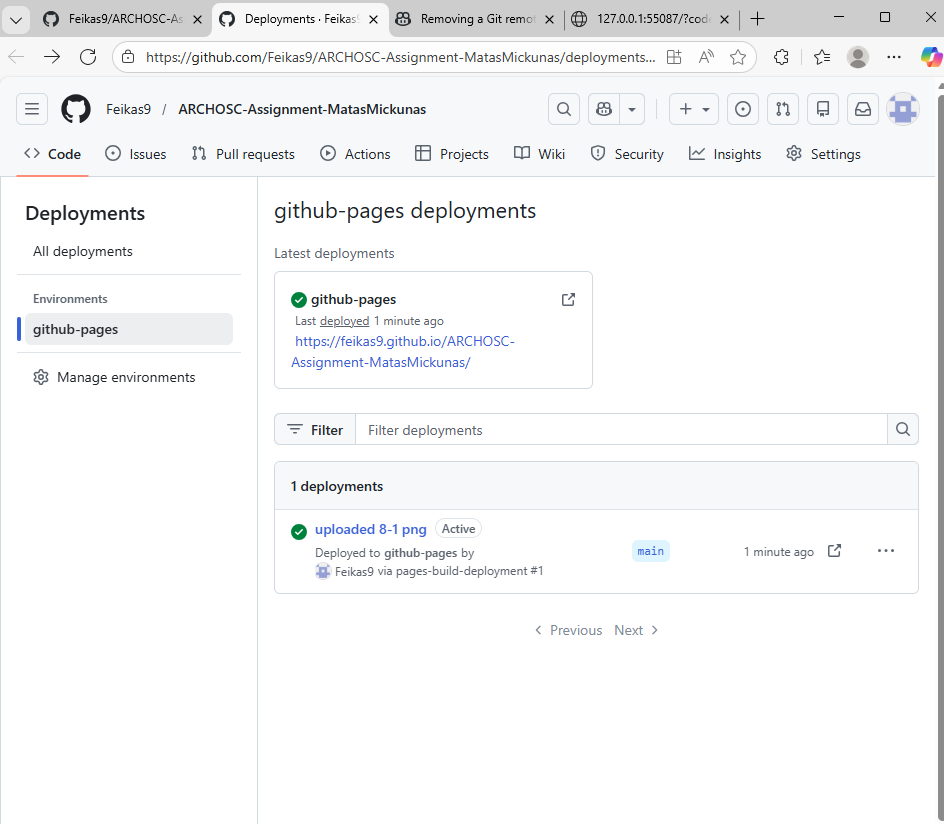

Images



Lab3: I have learned how to set up YAML files for configuration and navigate through git hub.
(side note) I used random images for the screenshots as I have not properly completed labs 1 to 3
